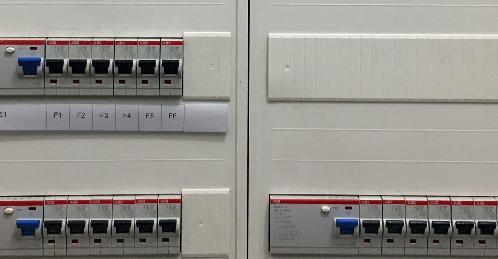
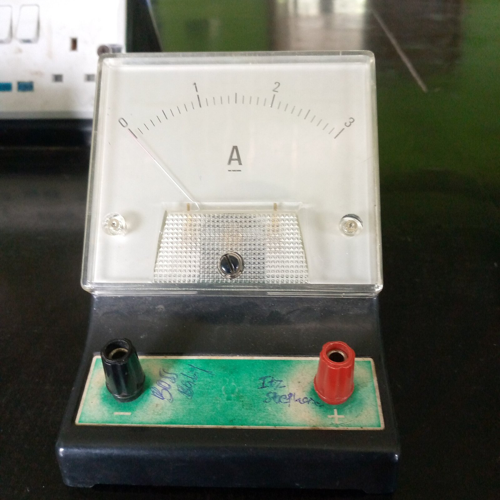

Erkläre den Unterschied: Was teilt sich in der Reihenschaltung auf — und was in der Parallelschaltung?
Zuerst allein überlegen, dann mit dem Nachbarn vergleichen.
Motivation · Einstieg
Kombinierte Schaltungen
Viele Sicherungen in einem Kasten

Im Sicherungskasten eines Ladens sitzen viele Sicherungen nebeneinander.
Jede gehört zu einem eigenen Stromkreis.
Wie hängen Steckdosen, Lampen und Schalter in einem Raum zusammen – hintereinander oder nebeneinander?
Foto: Pittigrilli · CC0 · Wikimedia Commons
Motivation
Kombinierte Schaltungen
Frage der Stunde
Eine Lampe vor zwei parallelen Lampen: Welche leuchtet am hellsten?
Schreib deine Vermutung ins Heft.
Kennst du das?
Im Auto: ein Hauptschalter, dahinter viele Lampen parallel.
Steckdosenleiste mit Schalter: erst Reihe, dann parallel.
Erarbeitung
Kombinierte Schaltungen
Heute wird euer Protokoll bewertet
Frage und eigene Vermutung
Schaltplan mit allen Messgeräten
Messwerte in einer Tabelle mit Einheiten
Auswertung: Gelten die Gesetze?
Fehlerbetrachtung: Was war ungenau?
Experiment · Planung
Kombinierte Schaltungen
Forscherfrage
Wie verteilen sich Stromstärke und Spannung, wenn eine Lampe vor zwei parallelen Lampen liegt?
Plant euren Versuch
Zeichnet den Schaltplan und markiert alle Messstellen.
Welche Stromstärken und welche Spannungen messt ihr?
Wie baut ihr den Strommesser um, ohne etwas zu vergessen?
Was erwartet ihr nach den Gesetzen?
Sicherheit: Der Strommesser kommt nie allein an die Batterie — immer mit einer Lampe in Reihe. Verbinde nie die beiden Pole der Batterie direkt mit einem Kabel — das Kabel wird heiß.
Experiment · Durchführung
Kombinierte Schaltungen
kombinierte Schaltung
Art
Schülerexperiment mit bewertetem Protokoll
Zeitbedarf
60–70 min mit Protokoll
Material
Netzgerät oder Flachbatterie, drei Lampen, Schalter, zwei Vielfachmessgeräte, Kabel
Sicherheit
Strommesser in Reihe, Spannungsmesser parallel
Prüft euch selbst
Stehen alle Messstellen im Schaltplan?
Hat jeder Wert seine Einheit?
Passen eure Werte zu den Gesetzen — ungefähr?
Steht im Protokoll, was ungenau war?
Experiment · Protokoll · Tafelbild
Kombinierte Schaltungen
Kombinierte Schaltungen
Stundenfrage: Eine Lampe vor zwei parallelen Lampen: Welche leuchtet am hellsten?
Das gehört ins Protokoll
Die kombinierte Schaltung
Welche Lampe leuchtet am hellsten?
Experiment · Protokoll · Tafelbild
Kombinierte Schaltungen
Das gehört ins Protokoll
mündlichnur besprechen
Frage und eigene Vermutung
Schaltplan mit allen Messgeräten
Messwerte in einer Tabelle mit Einheiten
Auswertung: Gelten die Gesetze?
Fehlerbetrachtung: Was war ungenau?
Klick auf eine Lücke deckt sie auf.
Experiment · Protokoll · Tafelbild
Kombinierte Schaltungen
Die kombinierte Schaltung
aus dem Versuch
0,4 A = 0,2 A + 0,2 A
Messstelle
I in A
Hauptleitung
0,4
Zweig 1
0,2
Zweig 2
0,2
Klick auf eine Lücke deckt sie auf.
Experiment · Protokoll · Tafelbild
Kombinierte Schaltungen
Welche Lampe leuchtet am hellsten?
mündlich
Die Lampe in der Hauptleitung bekommt den ganzen Strom — sie leuchtet am hellsten.
Die parallelen Lampen teilen sich den Strom.
Die Spannung der Quelle teilt sich auf die Lampe in der Hauptleitung und den parallelen Teil auf.
Klick auf eine Lücke deckt sie auf.
Auswertung
Kombinierte Schaltungen
Die kombinierte Schaltung
Die Lampe in der Hauptleitung bekommt den ganzen Strom — sie leuchtet am hellsten.
Die parallelen Lampen teilen sich den Strom.
Auswertung · Tafelbild · so steht es im Heft
Kombinierte Schaltungen
So steht es im Heft
Kombinierte SchaltungenDatum:
Stundenfrage: Eine Lampe vor zwei parallelen Lampen: Welche leuchtet am hellsten?
Die kombinierte Schaltung
0,4 A = 0,2 A + 0,2 A
Messstelle
I in A
Hauptleitung
0,4
Zweig 1
0,2
Zweig 2
0,2
Welche Lampe leuchtet am hellsten?
Die Lampe in der Hauptleitung bekommt den ganzen Strom — sie leuchtet am hellsten.
Merksatz
Auswertung · Merksatz · so steht es im Heft
Kombinierte Schaltungen
So steht es im Heft
Kombinierte SchaltungenDatum:
Stundenfrage: Eine Lampe vor zwei parallelen Lampen: Welche leuchtet am hellsten?
Die kombinierte Schaltung
0,4 A = 0,2 A + 0,2 A
Messstelle
I in A
Hauptleitung
0,4
Zweig 1
0,2
Zweig 2
0,2
Welche Lampe leuchtet am hellsten?
Die Lampe in der Hauptleitung bekommt den ganzen Strom — sie leuchtet am hellsten.
Merksatz
In einer kombinierten Schaltung gelten die Gesetze für jeden Teil: Der Strom der Hauptleitung teilt sich auf die Zweige auf. Die Spannung der Quelle teilt sich auf die Lampe in der Hauptleitung und den parallelen Teil auf.
Abschlussübung · falls Zeit
Kombinierte Schaltungen
Übungsaufgaben
Stromstärken bestimmen
In der Hauptleitung fließen 0,6 A. Die beiden parallelen Lampen sind gleich. Bestimme die Stromstärke in jeder von ihnen.
Eine Lampe liegt vor zwei gleichen parallelen Lampen. In jeder parallelen Lampe fließen 0,15 A. Berechne die Stromstärke in der ersten Lampe.
Spannung
Die Quelle hat 6 V, an der ersten Lampe liegen 4 V. Bestimme die Spannung an den parallelen Lampen.
Helligkeit
Begründe, welche Lampe am hellsten leuchtet.
Einstieg · Vergleich
Messunsicherheiten
Vergleiche
1) 0,15 A + 0,15 A = 0,3 A
2) 6 V − 4 V = 2 V an jeder der beiden
3) Die erste: Durch sie fließt der ganze Strom, und an ihr liegt die größte Spannung.
Diskussion
Messunsicherheiten
Frage der Stunde — was meint ihr?
Drei Gruppen messen dieselbe Lampe: 0,24 A, 0,25 A und 0,27 A. Wer hat richtig gemessen?
Überlegt zu zweit: Was vermutet ihr — und warum?
Schreib deine Vermutung ins Heft.
⏱ 3 min — zu zweit, dann in der Klasse
Erarbeitung · Bild
Messunsicherheiten
Ein Zeigermessgerät

Ein analoges Messgerät mit Zeiger, einem „A“ auf der Skala und zwei Buchsen (schwarz und rot).
Was misst dieses Gerät, und woran erkennt ihr das? Wozu sind die rote und die schwarze Buchse da?
Auflösung
Das „A“ steht für Ampere: ein Strommesser (Amperemeter). Rot = Plus, schwarz = Minus; das Gerät wird in den Stromkreis hineingeschaltet (in Reihe), damit der Strom durch das Gerät fließt.
Foto: Jeremyida002 · CC BY-SA 4.0 · Wikimedia Commons
Erarbeitung
Messunsicherheiten
Woher kommen die Unterschiede?
Ablesen: schräg auf die Skala geschaut, zwischen zwei Strichen geschätzt
Messgerät: Jedes Gerät hat eine begrenzte Genauigkeit, die Anzeige springt.
Aufbau: Wackelkontakte, die Batterie lässt nach
Bauteile: Zwei „gleiche“ Lampen sind nie ganz gleich.
Erarbeitung
Messunsicherheiten
Gilt das Gesetz trotzdem?
Gemessen: Hauptleitung 0,51 A
Zweige: 0,25 A + 0,27 A = 0,52 A
Der Unterschied ist kleiner als die Messunsicherheit — das Gesetz ist bestätigt.
Erarbeitung · Tafelbild
Messunsicherheiten
Messunsicherheiten
Stundenfrage: Drei Gruppen messen dieselbe Lampe: 0,24 A, 0,25 A und 0,27 A. Wer hat richtig gemessen?
Woher kommen die Unterschiede?
Gilt das Gesetz trotzdem?
Besser messen
Erarbeitung · Tafelbild
Messunsicherheiten
Woher kommen die Unterschiede?
mündlichins Heft: die ersten 2 Zeilen
Jede Messung hat eine Messunsicherheit — sie ist unvermeidbar.
Ursache
Beispiel
Ablesen
schräg auf die Skala geschaut, zwischen zwei Strichen geschätzt
Messgerät
begrenzte Genauigkeit, die Anzeige springt
Aufbau
Wackelkontakte, die Batterie lässt nach
Bauteile
zwei „gleiche“ Lampen sind nie ganz gleich
Klick auf eine Lücke deckt sie auf.
Erarbeitung · Tafelbild
Messunsicherheiten
Gilt das Gesetz trotzdem?
gemeinsam ausrechnen
Hauptleitung gemessen: 0,51 A
Zweige: 0,25 A + 0,27 A = 0,52 A
Der Unterschied ist kleiner als die Messunsicherheit.
Iges = I1 + I2 ist bestätigt.
Klick auf eine Lücke deckt sie auf.
Erarbeitung · Tafelbild
Messunsicherheiten
Besser messen
mündlichnur besprechen
senkrecht auf die Skala schauen
passenden Messbereich wählen
mehrmals messen und den Mittelwert bilden
Klick auf eine Lücke deckt sie auf.
Notieren · Tafelbild · so steht es im Heft (1/2)
Messunsicherheiten
So steht es im Heft (1/2)
MessunsicherheitenDatum:
Stundenfrage: Drei Gruppen messen dieselbe Lampe: 0,24 A, 0,25 A und 0,27 A. Wer hat richtig gemessen?
Woher kommen die Unterschiede?
Jede Messung hat eine Messunsicherheit — sie ist unvermeidbar.
Ursache
Beispiel
Ablesen
schräg auf die Skala geschaut, zwischen zwei Strichen geschätzt
Messgerät
begrenzte Genauigkeit, die Anzeige springt
Gilt das Gesetz trotzdem?
Hauptleitung gemessen: 0,51 A
Zweige: 0,25 A + 0,27 A = 0,52 A
Der Unterschied ist kleiner als die Messunsicherheit.
Merksatz
Notieren · Merksatz · so steht es im Heft (1/2)
Messunsicherheiten
So steht es im Heft (1/2)
MessunsicherheitenDatum:
Stundenfrage: Drei Gruppen messen dieselbe Lampe: 0,24 A, 0,25 A und 0,27 A. Wer hat richtig gemessen?
Woher kommen die Unterschiede?
Jede Messung hat eine Messunsicherheit — sie ist unvermeidbar.
Ursache
Beispiel
Ablesen
schräg auf die Skala geschaut, zwischen zwei Strichen geschätzt
Messgerät
begrenzte Genauigkeit, die Anzeige springt
Gilt das Gesetz trotzdem?
Hauptleitung gemessen: 0,51 A
Zweige: 0,25 A + 0,27 A = 0,52 A
Der Unterschied ist kleiner als die Messunsicherheit.
Merksatz
Jede Messung hat eine Messunsicherheit. Sie ist unvermeidbar und entsteht durch das Messgerät, das Ablesen und den Aufbau. Verkleinern lässt sie sich durch sorgfältiges Ablesen und mehrfaches Messen.
Notieren · Tafelbild · so steht es im Heft (2/2)
Messunsicherheiten
So steht es im Heft (2/2)
Messunsicherheiten (Fortsetzung)
Merksatz
Notieren · Merksatz · so steht es im Heft (2/2)
Messunsicherheiten
So steht es im Heft (2/2)
Messunsicherheiten (Fortsetzung)
Merksatz
Wer ein Gesetz aus Messwerten prüft, beachtet die Messgenauigkeit: Kleine Abweichungen im Rahmen der Messunsicherheit widerlegen das Gesetz nicht.
Übung · mündlich
Messunsicherheiten
Kurz mündlich
Ursachen nennen
Nenne drei Ursachen für Messunsicherheiten beim Messen der Stromstärke.
Messwerte beurteilen
Lea misst in einer Reihenschaltung 0,30 A vor und 0,29 A hinter der Lampe. Sie schreibt: „Die Lampe verbraucht Strom.“ Beurteile.
Übung · Lösung
Messunsicherheiten
Lösungen
Ursachen nennen
z. B. schräg abgelesen, ungenaues Messgerät, Wackelkontakt, schwächer werdende Batterie.
Messwerte beurteilen
Die Abweichung von 0,01 A liegt im Rahmen der Messunsicherheit.
Das Gesetz I = I1 = I2 gilt — die Lampe verbraucht keinen Strom.
Check-out
Messunsicherheiten
Check-out
Erkläre, warum zwei Gruppen mit demselben Aufbau nie genau denselben Wert messen.
Wie sicher bist du?
👍 sicher👌 mit Hilfe👎 noch nicht
LB 2 Stromstärke und Spannung · Messen in Schaltungen